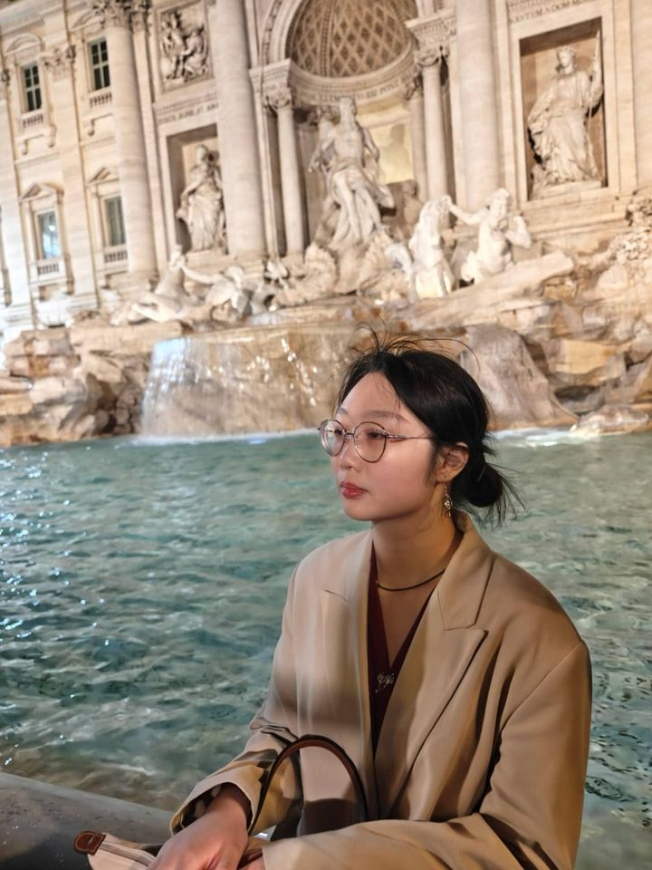

Concept Artist · Digital Artist · Game Designer. Characters, scenes and interfaces, from first sketch to finished game assets. Based in London, open to opportunities.
Download CV ↓
I'm Yihan, a concept and digital artist working in game art. I design characters, scenes, interfaces and animation assets, and I design the games they live in. I also make comics, from story and storyboard to finished pages.